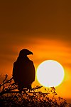

diurnal

Definition: Diurnality is a form of plant and animal behavior characterized by activity during daytime, with a period of sleeping or other inactivity at night. The common adjective used for daytime activity is "diurnal". The timing of activity by an animal depends on a variety of environmental factors such as the temperature, the ability to gather food by sight, the risk of predation, and the time of year. Diurnality is a cycle of activity within a 24-hour period; cyclic activities called circadian rhythms are endogenous cycles not dependent on external cues or environmental factors except for a zeitgeber. Animals active during twilight are crepuscular, those active during the night are nocturnal and animals active at sporadic times during both night and day are cathemeral.
Source: Wikipedia
Wikipedia Page (Something wrong with this association? Let us know.)
Wikidata Page (Something wrong with this association? Let us know.)